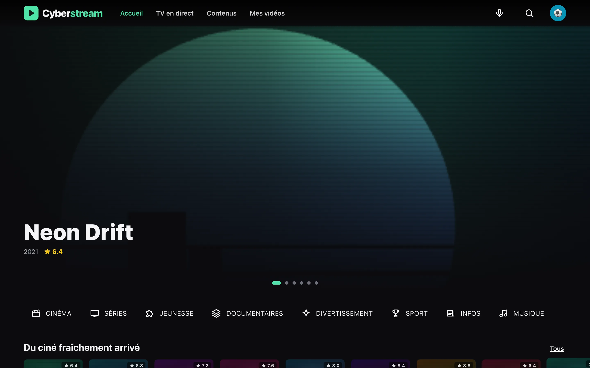

Xtream & M3U
قراءة الكتالوجات على دفعات، خوادم احتياطية، مزامنة تفاضلية: لا يُعاد كتابة إلا الصفوف المتغيّرة.
v2.0.0 · متوفر على Android وAndroid TV
يشغّل Cyberstream مصادرك من Xtream وM3U: القنوات المباشرة ودليل البرامج والأفلام والمسلسلات وإعادة المشاهدة. تعمل وحدة WebAssembly نفسها على الهواتف والتلفزيونات والحواسيب والمتصفحات.
مسجّل باستخدام المصدر التجريبي وبيانات TMDB.
// 01 — الميزات
قراءة الكتالوجات على دفعات، خوادم احتياطية، مزامنة تفاضلية: لا يُعاد كتابة إلا الصفوف المتغيّرة.
شبكة افتراضية «قناة × وقت»، تنقّل يومًا بيوم، دعم gzip والمناطق الزمنية. البرامج الماضية متاحة لإعادة المشاهدة.
صفحات غنية ببيانات TMDB: الممثلون، المجموعات، التصنيفات العمرية، المواسم والحلقات، استئناف المشاهدة والحلقة التالية.
تخزين مؤقت محلي من 30 إلى 60 دقيقة: إيقاف مؤقت و±10 ثوانٍ والعودة إلى المباشر في بثوث HLS، مع انتقال تلقائي إلى بث احتياطي.
«شغّل القناة 5»، «ابحث عن Dune»، «ارجع 30 ثانية». تُفهم على الجهاز نفسه، بلغات الواجهة الأربع عشرة.
امسح الرمز الظاهر على التلفزيون بهاتفك: يصل الملف الشخصي والمصادر والإعدادات دون كتابة رابط بجهاز التحكم.
ARTE وfrance.tv وOkoo مدمجة، إضافةً إلى خلاصات RSS ليوتيوب. للقنوات العامة الأولوية للبث الرسمي.
SRT وWebVTT والبحث ببصمة OpenSubtitles. تسجيل المشاهدة في Trakt وقائمة المشاهدة والتوصيات في الرئيسية.
عدة ملفات شخصية لكل منها لغتها وصورتها الرمزية وحدّها العمري. تبقى رموز الخدمات في المخزن الآمن للجهاز.
// 02 — الواجهة

// الهاتف
على الهاتف، ينتقل شريط التبويبات إلى الأسفل، وتُمرَّر الصفوف بإصبعك، ويدعم المشغّل وضع صورة داخل صورة. يُثبَّت ملف APK نفسه على الهواتف ويظهر في مشغّل Android TV.


// 03 — المحرك
// 04 — التثبيت
Cyberstream-x.y.z.apk من أحدث إصدار.adb:adb -d install -r Cyberstream-1.0.1.apkالحد الأدنى Android 7 (API 24)، مع WebView يدعم WebAssembly. بعد ذلك يتحقق التطبيق بنفسه من الإصدارات الجديدة على GitHub.
Rust مستقر مع هدف WebAssembly، وNode.js 22.12 أو أحدث، وnpm.
rustup target add wasm32-unknown-unknown
cargo install --locked wasm-bindgen-cli --version 0.2.108
npm ci
cargo test --locked && npm test
npm run dev -- --host 127.0.0.1أثناء التطوير، اختر المصدر التجريبي عند الإعداد لتجربته دون اشتراك.
يستخدم إصدار سطح المكتب Electron. شغّله محليًا أو ابنِ حزم macOS وWindows وLinux:
npm run desktop
npm run desktop:dist